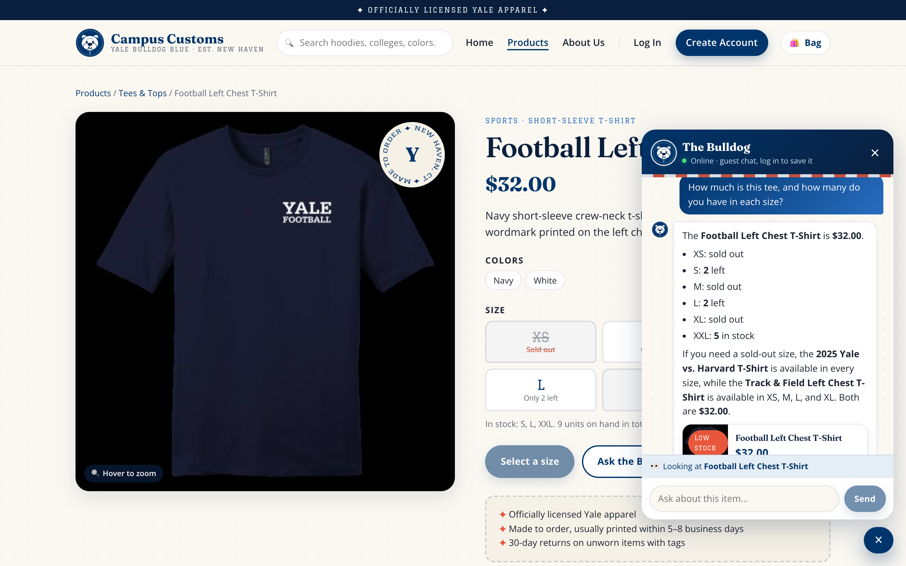
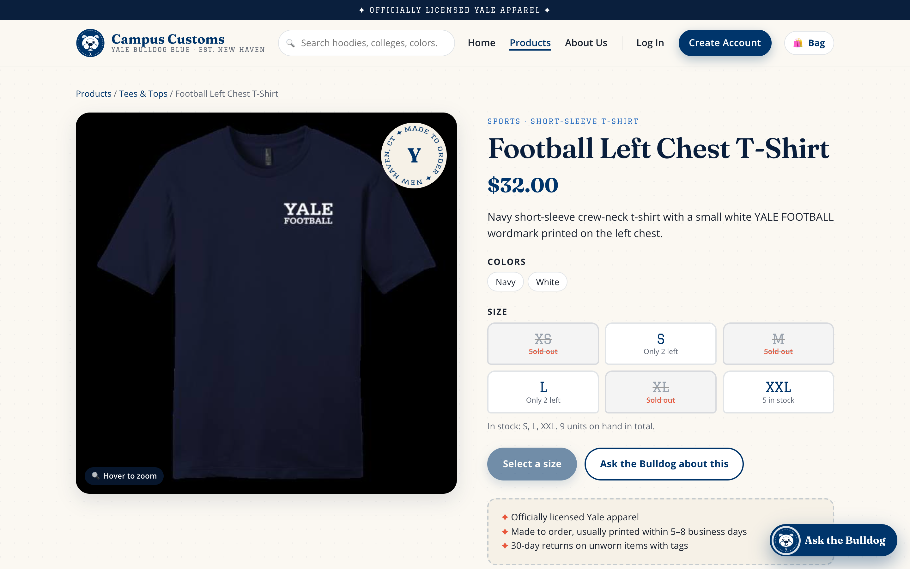
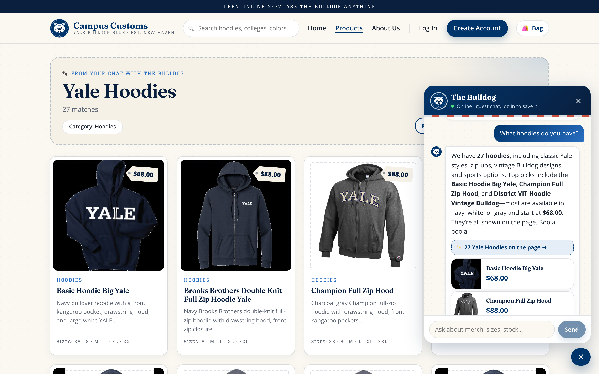
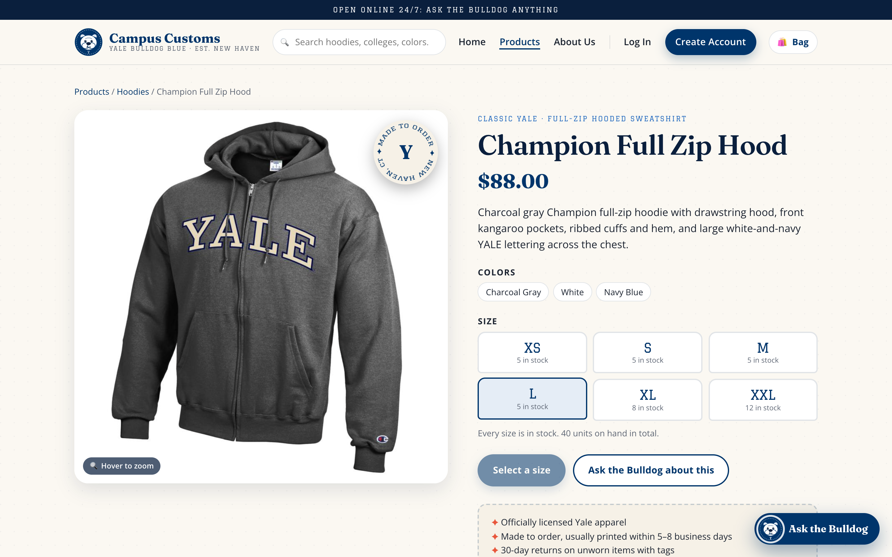
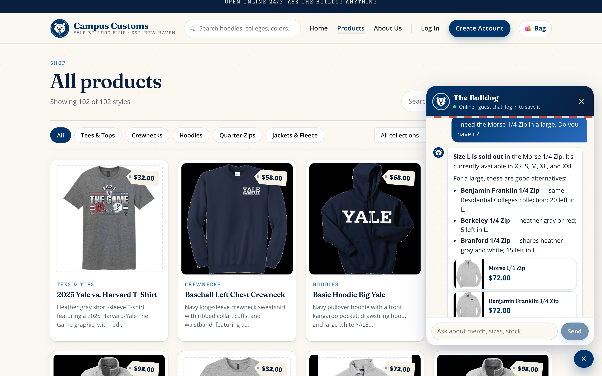
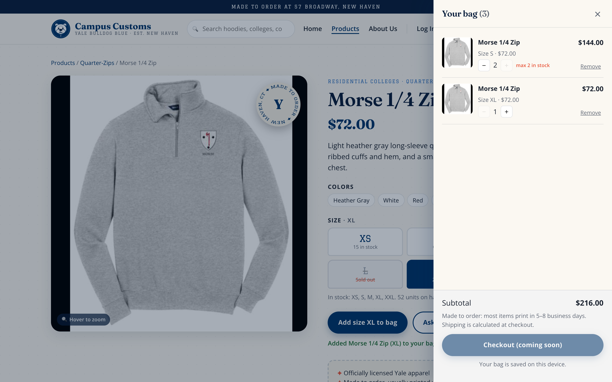
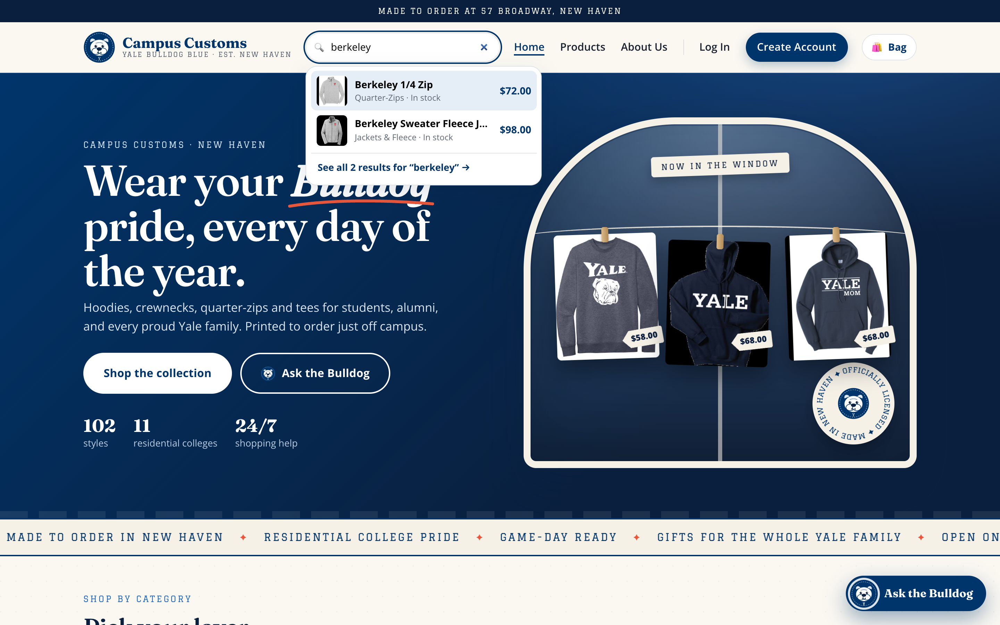

Summary
| # | Check | What was tested | Result |
|---|---|---|---|
| 1 | Chat checks an item's inventory | Price and stock per size in the chat answer vs. the product page vs. the database | PASS: all 7 numbers match |
| 2 | Dynamic search-result cards | "What hoodies do you have?" puts 27 product cards on the page, and a card opens its detail page | PASS |
| 3 | P9 usability features | (a) find_alternatives for a sold-out size, (b) shopping bag with stock limits, (c) instant header search | PASS |
Each screenshot was taken by an automated run of the real site in Google Chrome (Playwright, 1440×900 at 2×, signed out as a guest), with live agent answers. Click any screenshot to open it full size.
1Chat checks the inventory level of an item Pass
On the Football Left Chest T-Shirt page, the shopper asked the chat: "How much is this tee, and how many do you have in each size?"


| Field | Chat answer | Product page | Database (catalogue / inventory) | |
|---|---|---|---|---|
| Price | $32.00 | $32.00 | 32.0 | ✓ |
| XS | sold out | Sold out | 0 | ✓ |
| S | 2 left | Only 2 left | 2 | ✓ |
| M | sold out | Sold out | 0 | ✓ |
| L | 2 left | Only 2 left | 2 | ✓ |
| XL | sold out | Sold out | 0 | ✓ |
| XXL | 5 in stock | 5 in stock | 5 | ✓ |
What this proves: the chatbot gives honest, exact stock and price straight from the database. Every number matches the inventory and catalogue rows, and sold-out sizes are stated clearly.
2Dynamic search-result cards after a category question Pass
Starting on the Home page, the shopper asked: "What hoodies do you have?"

page_results). The site moved to Products and drew 27 hoodie cards (image, name, hang-tag price, short description, sizes) under "From your chat with the Bulldog · Yale Hoodies · 27 matches". The chat reply links to them ("27 Yale Hoodies on the page →") and shows 3 top picks. The database has exactly 27 hoodies.Clicking a card the chat put on the page

/products/champion-full-zip-hood: large image on the left, full info on the right (description, colors, $88.00, stock for every size).What this proves: the agent → page contract works. A category question becomes structured product matches that the front end renders as clickable cards, and those cards lead to the same detail view as the regular catalogue.
3Usability features added in Problem 9 Pass
3a. find_alternatives: rescuing a sold-out size (agent improvement)
The shopper asked: "I need the Morse 1/4 Zip in a large. Do you have it?" Large is sold out (L = 0 in the database).

What this proves: a sold-out answer now ends with real, in-stock options instead of a dead end, which saves the sale with accurate data.
3b. Shopping bag with live stock limits (front-end improvement)

3c. Instant header search (front-end improvement)

What this proves: the P9 features are live in the running app. Shoppers can't over-order beyond real stock, and they can find products from any page in a couple of keystrokes.